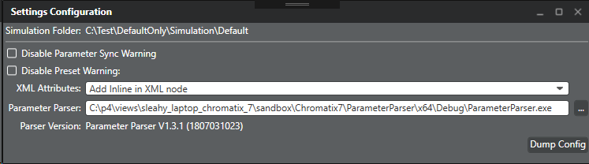
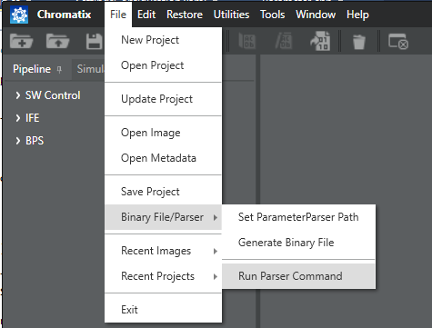
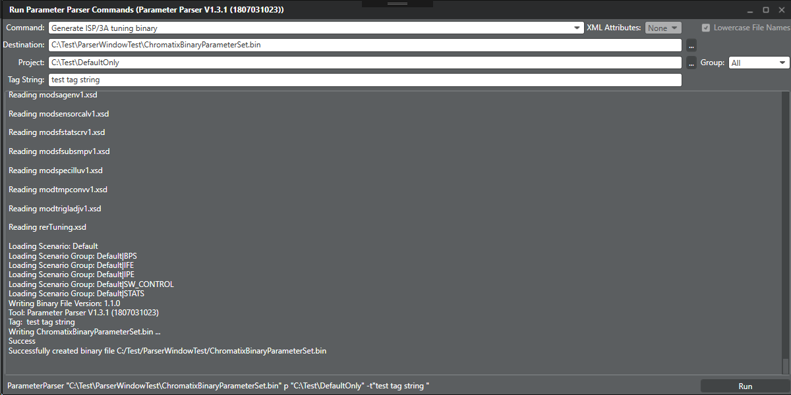

Execute the following steps to use the Run Parser Command
feature:
-
Load a project.
-
From the File menu, select to set the path for the parameter parser.

Ensure that the parameter
parser path points to the Windows version of the parameter parser tool that
comes along with the source code.
-
From the File menu, select .

The Run button is enabled if all
the requirements are met. Missing or invalid parameters disable it.
